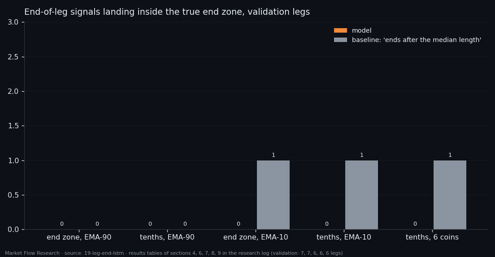
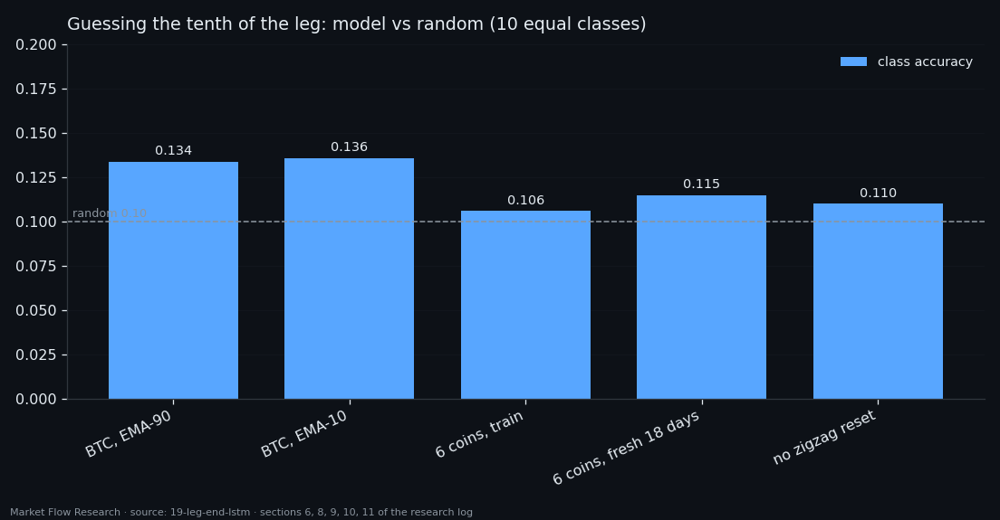
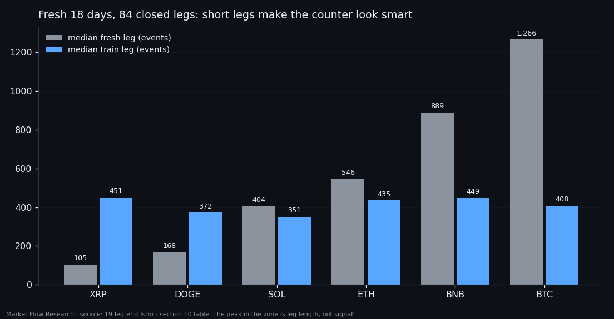
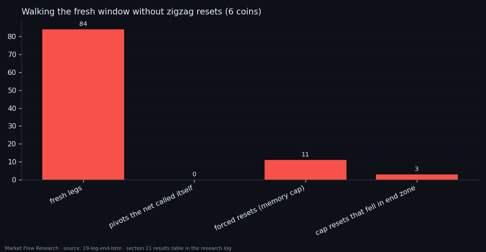

A Memory Network Asked "Is the Leg Over?" Learned to Count, Not to Read
In shortAn LSTM with attention walked each 2.3% zigzag leg event by event and, at every step, said how far along the leg was. Across five label designs, one coin and then six, it never once placed its end-of-leg signal inside the last tenth of a fresh leg. What it learned was a clock: a steady count from the start of the leg. When the zigzag stopped handing it that start — memory reset only when the network itself called a pivot — it did not call a single one in 42,192 events.
① A new question: the whole leg, event by event
Studies 16–18 judged each event through a window of fixed length and asked "where in the leg are we". This one changes the unit. The network gets a whole leg, from the event after one pivot to the next pivot, event by event, remembers everything it has seen, and at each step outputs one number: is the leg ending here? The end of a leg is the reversal.
The inputs are 210×14×4c — each event as 15 blocks of 14 seconds × 4 book features, 60 numbers — on BTC up to 29 August 2026 (43,859 events). Legs come from a 2.3% zigzag on a 90-event EMA of price: 50 pivots, 49 legs, median length 709 events. The "end zone" is measured by the leg itself: the last 10% of its events and the continuous stretch next to the pivot where price is within 10% of the leg's range — 11.9% of events. Memory is reset to zero at the start of every leg; padding never enters the LSTM, so the network cannot read "how much is left" from the sequence length. A causal attention layer on top lets it look back over the whole leg so far.
The split is by date: legs whose pivot is on or before 14 August 15:27 go to train, the rest to validation.

② It shouts "end" all the time
Under a positive-class weight of 7.6, the cheapest answer is to keep the end-of-leg probability above threshold almost everywhere. On one 877-event leg it crossed the threshold 550 times. So the rule "the first crossing is the signal" fires near the start of the leg — 435 events before the pivot on validation, 765 on train — and the number of legs where the signal landed in the end zone is zero on both. A baseline that simply says "the leg ends after the median length" beat it on train (3 of 42).
Four more designs followed. Ten classes — which tenth of the leg we are in — instead of a yes/no zone. A faster 10-event EMA under the zigzag, which doubles the legs to 87. Both together. None moved validation hits off zero; the best class accuracy was 0.136 against 0.10 for random, with an average error of two tenths of a leg. The first-ever hits — 5 of 81 legs — appeared on train only. With 6 or 7 validation legs the standard error was ±0.19–0.20; nothing could be proven either way.

③ Six coins, 602 legs — the step became a ruler
To get statistical power the training set grew to all six coins: 602 legs, 332,891 events. Two penalties shaped the output into a staircase — no jumps over a class, no steps backwards. They worked perfectly: zero jumps, 99.0% clean +1 steps on train, and the same on fresh data.
And that is exactly the problem. A smooth staircase minimises the penalty regardless of the features. Class accuracy dropped to 0.106 on train and 0.101 on validation — random for ten equal classes. The network had learned to count evenly from the start of the leg at the training pace, not to read the market.
A clean test made this plain: 14 August – 2 September 2026, all six coins, legs the model had seen removed — 84 fresh closed legs. Class accuracy 0.115, zero hits, the output never reaching class 10. The only number above chance, "peak in the end zone" at 28 of 84, turned out to be leg length: 23 of the 28 are on XRP and DOGE, whose fresh legs were two to four times shorter than in training. On a short leg a counter is still rising at the pivot; on a long one it tops out mid-leg. Nearly zero peaks where legs were longer.

④ Take away the zigzag's gift
One advantage had been given for free all along. A 2.3% pivot is confirmed only after price moves 2.3% away from the extreme, yet every leg entered the network with a clean memory exactly at its first event. Live, nobody knows where that first event is.
So the last test removed it. The same trained weights walk the series event by event without cutting it; memory resets only when the network itself says "class 10 — pivot here", with a safety cap of 3,000 events and a 3,000-event warm-up before the window. No zigzag, no scaler, causal attention; the zigzag stays only as the answer key.
Result on 42,192 events of six coins: zero self-called pivots. All 11 resets came from the cap, and 3 of them happened to fall in an end zone — 3.6% of legs, below the 10% that chance would give. Class accuracy fell from 0.115 to 0.110 and the error grew from 2.16 to 2.43 tenths: that difference is precisely what the zigzag had been contributing. A label defined by the leg's length is only knowable to the zigzag. The lesson carried forward: a target that can be minimised by counting will be minimised by counting — the next studies change the question, not the knobs.

Reproduce this study
- Research log (.md, Ukrainian): goal, data, plan, scripts, every confirmed stage and table — enough to rerun the study
- Reproduction kit (.zip): the study's scripts, project rules and base scripts that build every class
All our bots have been tested live. The best one is Line 7.
More than a dozen bots were built from this research. Line 7 — two small transformers that read 160 hours of order book as one picture — is the only one ahead of buy & hold in live trading: +5.44% since 5 Oct while BTC moved −5.29%. Every trade is in the report.
Everything on this site is research, not financial advice.
How to read this site in 5 minutes · All studies as one .md for AI · All research
← All research